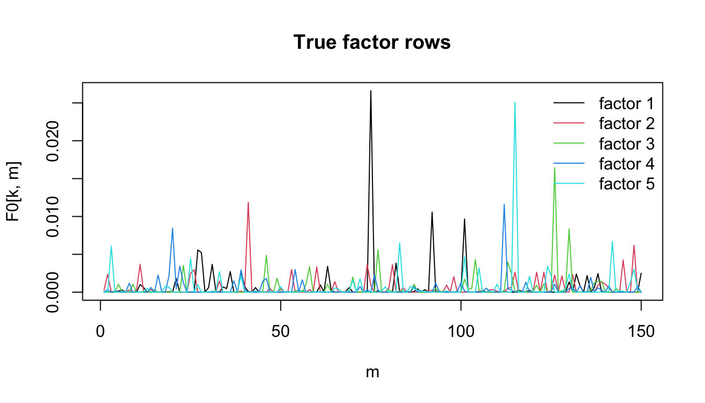
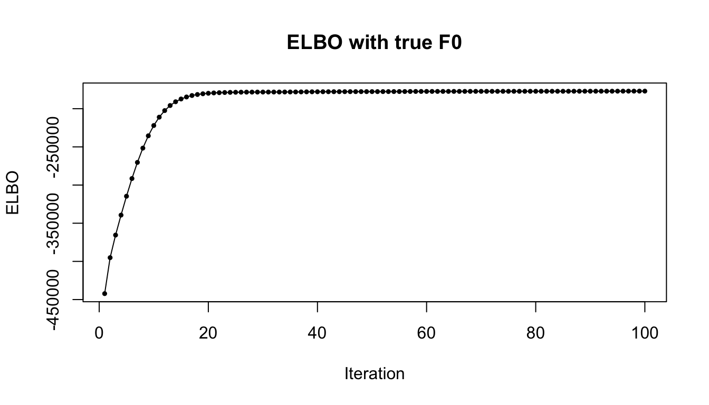
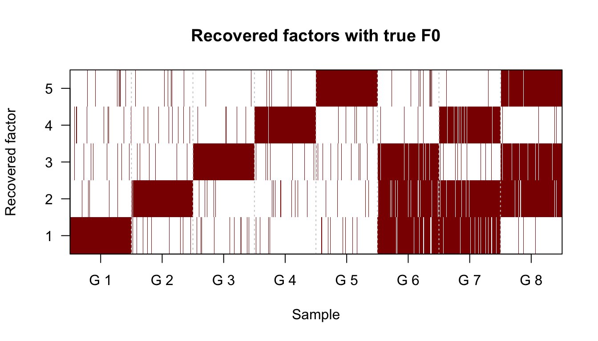
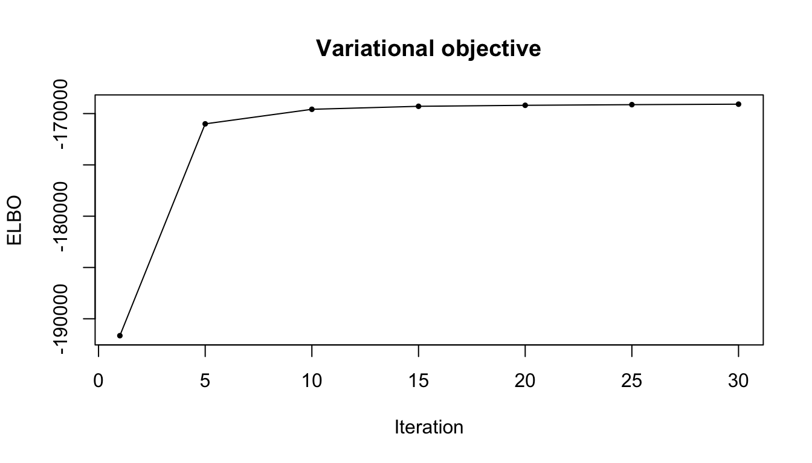
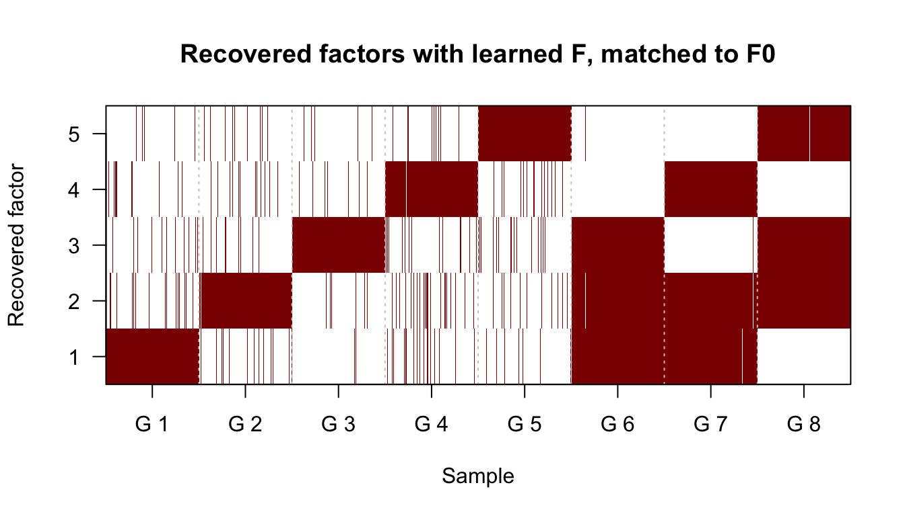

Last updated: 2026-07-27
Checks: 5 2
Knit directory: mos-nmf-experiments/
This reproducible R Markdown analysis was created with workflowr (version 1.7.1). The Checks tab describes the reproducibility checks that were applied when the results were created. The Past versions tab lists the development history.
The R Markdown is untracked by Git. To know which version of the R Markdown file created these results, you’ll want to first commit it to the Git repo. If you’re still working on the analysis, you can ignore this warning. When you’re finished, you can run wflow_publish to commit the R Markdown file and build the HTML.
The global environment had objects present when the code in the R Markdown file was run. These objects can affect the analysis in your R Markdown file in unknown ways. For reproduciblity it’s best to always run the code in an empty environment. Use wflow_publish or wflow_build to ensure that the code is always run in an empty environment.
The following objects were defined in the global environment when these results were created:
| Name | Class | Size |
|---|---|---|
| rstudio_pandoc | character | 232 bytes |
The command set.seed(20260624) was run prior to running the code in the R Markdown file. Setting a seed ensures that any results that rely on randomness, e.g. subsampling or permutations, are reproducible.
Great job! Recording the operating system, R version, and package versions is critical for reproducibility.
Nice! There were no cached chunks for this analysis, so you can be confident that you successfully produced the results during this run.
Great job! Using relative paths to the files within your workflowr project makes it easier to run your code on other machines.
Great! You are using Git for version control. Tracking code development and connecting the code version to the results is critical for reproducibility.
The results in this page were generated with repository version 5b76597. See the Past versions tab to see a history of the changes made to the R Markdown and HTML files.
Note that you need to be careful to ensure that all relevant files for the analysis have been committed to Git prior to generating the results (you can use wflow_publish or wflow_git_commit). workflowr only checks the R Markdown file, but you know if there are other scripts or data files that it depends on. Below is the status of the Git repository when the results were generated:
Ignored files:
Ignored: .DS_Store
Ignored: .Rhistory
Ignored: .Rproj.user/
Ignored: analysis/.DS_Store
Untracked files:
Untracked: analysis/1.poisson-susie.Rmd
Untracked: analysis/2.joint-learn-susie-poi-F.Rmd
Untracked: analysis/3.overspecify-D-mf-poi-susie.Rmd
Untracked: analysis/4.overspecify-K-mf-poi-susie.Rmd
Untracked: analysis/5.tree-scenario.Rmd
Untracked: tex/main.pdf
Untracked: tex/main.tex
Unstaged changes:
Modified: .codex/project-memory.md
Modified: analysis/_site.yml
Modified: analysis/index.Rmd
Deleted: analysis/joint-learn-susie-poi-F.Rmd
Modified: analysis/mos-nmf-overspecify-D.Rmd
Deleted: analysis/overspecify-D-mf-poi-susie.Rmd
Deleted: analysis/overspecify-K-mf-poi-susie.Rmd
Deleted: analysis/poisson-susie.Rmd
Deleted: analysis/tree-scenario.Rmd
Modified: code/mos-nmf-benchmark-utils.R
Modified: code/mos-nmf.R
Modified: paper-roadmap.md
Deleted: tex/model-ideas.tex
Note that any generated files, e.g. HTML, png, CSS, etc., are not included in this status report because it is ok for generated content to have uncommitted changes.
There are no past versions. Publish this analysis with wflow_publish() to start tracking its development.
This page extends the single-observation experiment to a count matrix. It turns the simulation at the end of code/joint-learn-susie-poi-F.R into a reproducible workflowr analysis, and fits matrix-factorization Poisson SuSiE while updating the shared factor matrix F.
The key question is whether the model can recover both pieces of structure: the dictionary rows \(F_{k\cdot}\) and the sparse loading supports for each observation.
source("code/joint-learn-susie-poi-F.R")For a count matrix \(Y \in \mathbb{N}^{N \times M}\), the fitted model uses a shared nonnegative factor matrix \(F \in \mathbb{R}_+^{K \times M}\) and a small number \(D\) of single-effect components per observation: \[
Y_{im} \sim \mathrm{Poisson}\left(
\sum_{d=1}^D \beta_{id} F_{\gamma_{id}m}
\right).
\] Each effect chooses one factor row through \(\gamma_{id} \in \{1,\ldots,K\}\), and its size is \(\beta_{id} > 0\). The variational fit estimates posterior assignment probabilities gamma_bar[i, d, k], Gamma variational parameters for the effect sizes, and, in the unknown-F fit, the shared factor matrix F.
The simulation below first checks recovery when the true factor matrix F0 is given to the algorithm, then repeats the fit with F initialized by Poisson NMF and learned jointly.
We create eight observation groups. Groups 1 through 5 each use one factor, and groups 6 through 8 use three-factor combinations.
set.seed(42)
N = 1600
M = 2000
K = 5
D = 3
F0 = matrix(rgamma(M * K, shape = 0.1, rate = 0.01), nrow = K, ncol = M)
F0 = F0 / rowSums(F0)
n_per_group = N / 8
L = matrix(0, nrow = N, ncol = K)
grp = rep(1:8, each = n_per_group)
for (g in 1:5) {
L[grp == g, g] = matrix(rgamma(n_per_group, 10, 1), n_per_group, 1)
}
L[grp == 6, c(1, 2, 3)] = matrix(rgamma(n_per_group * 3, 20, 1),
n_per_group, 3)
L[grp == 7, c(1, 2, 4)] = matrix(rgamma(n_per_group * 3, 20, 1),
n_per_group, 3)
L[grp == 8, c(2, 3, 5)] = matrix(rgamma(n_per_group * 3, 20, 1),
n_per_group, 3)
rate = L %*% F0
Y = matrix(rpois(N * M, rate), nrow = N, ncol = M)
data.frame(
N = N,
M = M,
K = K,
D = D,
total_count = sum(Y),
nonzero_entries = sum(Y > 0)
) N M K D total_count nonzero_entries
1 1600 2000 5 3 45971 43361true_patterns = vapply(1:8, function(g) {
paste(which(colSums(L[grp == g, , drop = FALSE]) > 0), collapse = ",")
}, character(1))
data.frame(group = 1:8, true_active_factors = true_patterns) group true_active_factors
1 1 1
2 2 2
3 3 3
4 4 4
5 5 5
6 6 1,2,3
7 7 1,2,4
8 8 2,3,5matplot(t(F0[, 1:150]), type = "l", lty = 1,
xlab = "m", ylab = "F0[k, m]",
main = "True factor rows")
legend("topright", legend = paste("factor", 1:K), col = 1:K, lty = 1,
bty = "n")
row_cosine = function(A, B) {
A_norm = sqrt(rowSums(A^2))
B_norm = sqrt(rowSums(B^2))
(A %*% t(B)) / (A_norm %o% B_norm)
}
all_permutations = function(x) {
if (length(x) == 1) return(matrix(x, nrow = 1))
do.call(rbind, lapply(seq_along(x), function(i) {
cbind(x[i], all_permutations(x[-i]))
}))
}
match_factor_rows = function(F_hat, F_true) {
K = nrow(F_true)
similarity = row_cosine(F_hat, F_true)
if (K <= 8) {
perms = all_permutations(seq_len(K))
scores = apply(perms, 1, function(p) {
sum(similarity[cbind(seq_len(K), p)])
})
learned_to_true = perms[which.max(scores), ]
} else {
learned_to_true = rep(NA_integer_, K)
available = seq_len(K)
for (k in seq_len(K)) {
best = available[which.max(similarity[k, available])]
learned_to_true[k] = best
available = setdiff(available, best)
}
}
data.frame(
learned_factor = seq_len(K),
matched_true_factor = learned_to_true,
cosine = similarity[cbind(seq_len(K), learned_to_true)]
)
}
support_labels = function(gamma_bar, support_sizes, learned_to_true = NULL) {
pip = apply(gamma_bar, c(1, 3), sum)
K = ncol(pip)
if (!is.null(learned_to_true)) {
pip_matched = matrix(0, nrow = nrow(pip), ncol = K)
for (k in seq_len(K)) {
pip_matched[, learned_to_true[k]] = pip_matched[, learned_to_true[k]] +
pip[, k]
}
pip = pip_matched
}
vapply(seq_len(nrow(pip)), function(i) {
active = order(pip[i, ], decreasing = TRUE)[seq_len(support_sizes[i])]
paste(sort(active), collapse = ",")
}, character(1))
}
gamma_entropy = function(gamma_bar) {
entropy = -gamma_bar * log(gamma_bar)
entropy[is.nan(entropy)] = 0
mean(rowSums(entropy, dims = 2)) / log(dim(gamma_bar)[3])
}
plot_elbo = function(fit, main) {
idx = fit$elbo_iter
plot(idx, fit$elbo[idx], type = "l", xlab = "Iteration", ylab = "ELBO",
main = main)
points(idx, fit$elbo[idx], pch = 19, cex = 0.5)
}
true_support_size = rowSums(L > 0)
true_support_label = apply(L > 0, 1, function(x) {
paste(which(x), collapse = ",")
})As a baseline, we first fit the model with the true factor matrix fixed. This isolates recovery of the posterior labels from the harder problem of learning F.
fit_true_F0 = mf_poi_susie_fixed_F(
Y = Y,
F = F0,
D = D,
max_iters = 100,
update_prior = TRUE,
break_symmetry = FALSE,
init_seed = 1,
gamma_step_init = 0.1,
gamma_step_ramp = 50
)plot_elbo(fit_true_F0, "ELBO with true F0")
top_k_true_F0 = matrix(0, N, D)
for (d in 1:D) {
top_k_true_F0[, d] = apply(fit_true_F0$gamma_bar[, d, ], 1, which.max)
}
recovered_label_true_F0 = apply(top_k_true_F0, 1, function(x) {
paste(sort(x), collapse = ",")
})
recovered_factor_mat_true_F0 = matrix(0, nrow = K, ncol = N)
for (i in 1:N) {
recovered_factor_mat_true_F0[top_k_true_F0[i, ], i] =
recovered_factor_mat_true_F0[top_k_true_F0[i, ], i] + 1
}
image(x = seq_len(N), y = seq_len(K), z = t(recovered_factor_mat_true_F0),
axes = FALSE, xlab = "Sample", ylab = "Recovered factor",
main = "Recovered factors with true F0",
col = c("white", "firebrick", "darkred"))
axis(1, at = seq(n_per_group / 2, N, by = n_per_group),
labels = paste("G", 1:8))
axis(2, at = seq_len(K), labels = seq_len(K), las = 1)
abline(v = seq(n_per_group, N - n_per_group, by = n_per_group),
col = "gray80", lty = 3)
box()
recovered_by_group_true_F0 = do.call(rbind, lapply(1:8, function(g) {
idx = which(grp == g)
tab = table(recovered_label_true_F0[idx])
data.frame(group = g, recovered_pattern = names(tab), n = as.integer(tab),
row.names = NULL)
}))
recovered_by_group_true_F0 group recovered_pattern n
1 1 1,1,1 160
2 1 1,1,2 2
3 1 1,1,3 2
4 1 1,1,4 3
5 1 1,1,5 1
6 1 1,2,2 3
7 1 1,2,3 1
8 1 1,3,3 8
9 1 1,3,4 1
10 1 1,4,4 10
11 1 1,5,5 9
12 2 1,1,1 1
13 2 1,1,2 10
14 2 1,2,2 4
15 2 2,2,2 157
16 2 2,2,3 2
17 2 2,2,4 4
18 2 2,2,5 2
19 2 2,3,3 6
20 2 2,4,4 6
21 2 2,5,5 8
22 3 1,1,3 13
23 3 1,3,3 4
24 3 2,2,3 8
25 3 2,3,3 3
26 3 3,3,3 164
27 3 3,3,4 1
28 3 3,3,5 1
29 3 3,4,4 5
30 3 3,5,5 1
31 4 1,1,1 1
32 4 1,1,4 3
33 4 1,3,4 1
34 4 2,2,4 12
35 4 2,4,4 4
36 4 3,3,4 7
37 4 3,4,4 1
38 4 4,4,4 164
39 4 4,4,5 2
40 4 4,5,5 5
41 5 1,1,5 8
42 5 1,5,5 1
43 5 2,2,5 5
44 5 2,5,5 1
45 5 3,3,5 7
46 5 3,4,5 1
47 5 3,5,5 4
48 5 4,4,5 6
49 5 4,5,5 2
50 5 5,5,5 165
51 6 1,1,2 1
52 6 1,1,3 7
53 6 1,2,2 2
54 6 1,2,3 166
55 6 1,2,4 2
56 6 1,2,5 2
57 6 1,3,3 3
58 6 1,3,4 1
59 6 1,3,5 4
60 6 2,2,3 7
61 6 2,3,3 1
62 6 2,3,5 3
63 6 2,4,5 1
64 7 1,1,2 1
65 7 1,1,4 3
66 7 1,2,2 4
67 7 1,2,3 4
68 7 1,2,4 166
69 7 1,2,5 2
70 7 1,3,4 3
71 7 1,4,4 3
72 7 1,4,5 1
73 7 2,2,4 4
74 7 2,3,4 5
75 7 2,4,4 3
76 7 2,4,5 1
77 8 1,2,3 2
78 8 1,2,5 1
79 8 1,3,4 1
80 8 1,3,5 2
81 8 1,4,5 1
82 8 2,2,3 4
83 8 2,2,5 5
84 8 2,3,3 4
85 8 2,3,5 170
86 8 2,4,5 2
87 8 2,5,5 3
88 8 3,4,5 2
89 8 3,5,5 3The fit initializes F with Poisson NMF, initializes the row-level sparse assignments from the Poisson-NMF loading matrix, then updates F inside the variational loop with damping.
fit = mf_poi_susie(
Y = Y,
K = K,
D = D,
max_iters = 100,
update_prior = TRUE,
break_symmetry = FALSE,
init_seed = 1,
init_F = "poisson_nmf",
nmf_iters = 200,
init_gamma_from_nmf = TRUE,
gamma_step_init = 0.1,
gamma_step_ramp = 50,
F_step_init = 0.05,
F_step_ramp = 75,
elbo_every = 5,
tol = 5e-4,
min_iters = 20,
patience = 2
)plot_elbo(fit, "Variational objective")
data.frame(
converged = fit$converged,
n_iter = fit$n_iter,
final_elbo = tail(fit$elbo[fit$elbo_iter], 1)
) converged n_iter final_elbo
1 TRUE 30 -169082.2Rows of the learned F are identifiable only up to permutation, so we first match learned rows to true rows using cosine similarity.
factor_match = match_factor_rows(fit$F, F0)
learned_to_true = factor_match$matched_true_factor
factor_match learned_factor matched_true_factor cosine
1 1 1 0.9871834
2 2 5 0.9798953
3 3 3 0.9854459
4 4 4 0.9804036
5 5 2 0.9844566data.frame(
mean_matched_cosine = mean(factor_match$cosine),
min_matched_cosine = min(factor_match$cosine)
) mean_matched_cosine min_matched_cosine
1 0.983477 0.9798953For each observation and effect, we summarize the factor with the largest posterior assignment probability, then remap learned factor labels to the matched true labels.
top_k = matrix(0, N, D)
for (d in 1:D) {
top_k[, d] = apply(fit$gamma_bar[, d, ], 1, which.max)
}
top_k_matched = matrix(learned_to_true[top_k], nrow = N, ncol = D)
recovered_by_group = do.call(rbind, lapply(1:8, function(g) {
idx = which(grp == g)
tab = table(apply(top_k_matched[idx, ], 1, function(x) {
paste(sort(x), collapse = ",")
}))
data.frame(group = g, recovered_pattern = names(tab), n = as.integer(tab),
row.names = NULL)
}))
recovered_by_group group recovered_pattern n
1 1 1,1,1 149
2 1 1,1,2 10
3 1 1,1,3 2
4 1 1,1,4 6
5 1 1,1,5 3
6 1 1,2,2 4
7 1 1,2,3 2
8 1 1,2,4 5
9 1 1,3,3 9
10 1 1,4,4 5
11 1 1,5,5 5
12 2 1,1,1 1
13 2 1,1,2 9
14 2 1,2,2 4
15 2 1,2,3 4
16 2 1,2,4 1
17 2 1,2,5 1
18 2 2,2,2 147
19 2 2,2,3 2
20 2 2,2,4 3
21 2 2,2,5 2
22 2 2,3,3 5
23 2 2,3,4 2
24 2 2,3,5 1
25 2 2,4,4 9
26 2 2,4,5 1
27 2 2,5,5 8
28 3 1,1,3 2
29 3 1,2,3 1
30 3 1,3,3 2
31 3 1,3,5 1
32 3 2,2,3 2
33 3 2,3,3 2
34 3 2,3,4 1
35 3 3,3,3 170
36 3 3,3,4 4
37 3 3,3,5 2
38 3 3,4,4 8
39 3 3,5,5 5
40 4 1,1,1 1
41 4 1,1,4 4
42 4 1,2,4 12
43 4 1,3,4 2
44 4 1,4,4 1
45 4 2,2,4 9
46 4 2,4,4 6
47 4 2,4,5 1
48 4 3,3,4 14
49 4 3,4,4 3
50 4 3,4,5 1
51 4 4,4,4 129
52 4 4,4,5 5
53 4 4,5,5 12
54 5 1,1,5 6
55 5 1,2,5 1
56 5 1,3,5 1
57 5 1,5,5 1
58 5 2,2,5 2
59 5 2,3,5 2
60 5 2,4,5 7
61 5 2,5,5 6
62 5 3,3,5 11
63 5 3,5,5 3
64 5 4,4,5 4
65 5 4,5,5 9
66 5 5,5,5 147
67 6 1,2,3 199
68 6 1,3,5 1
69 7 1,2,4 198
70 7 1,3,4 1
71 7 2,2,4 1
72 8 2,2,3 1
73 8 2,3,5 199representative_idx = c(
which(grp == 1)[1],
which(grp == 2)[1],
which(grp == 3)[1],
which(grp == 4)[1],
which(grp == 5)[1],
which(grp == 6)[4],
which(grp == 7)[1],
which(grp == 8)[1]
)
representative_gamma = lapply(seq_along(representative_idx), function(j) {
i = representative_idx[j]
out = round(fit$gamma_bar[i, , ], 2)
rownames(out) = paste0("effect_", seq_len(D))
colnames(out) = paste0("factor_", seq_len(K))
out
})
names(representative_gamma) = paste0("group_", 1:8)
representative_gamma$group_1
factor_1 factor_2 factor_3 factor_4 factor_5
effect_1 1.0 0.0 0.0 0.0 0.0
effect_2 0.2 0.2 0.2 0.2 0.2
effect_3 0.2 0.2 0.2 0.2 0.2
$group_2
factor_1 factor_2 factor_3 factor_4 factor_5
effect_1 0.0 0.0 0.0 0.0 1.0
effect_2 0.2 0.2 0.2 0.2 0.2
effect_3 0.2 0.2 0.2 0.2 0.2
$group_3
factor_1 factor_2 factor_3 factor_4 factor_5
effect_1 0.0 0.0 1.0 0.0 0.0
effect_2 0.2 0.2 0.2 0.2 0.2
effect_3 0.2 0.2 0.2 0.2 0.2
$group_4
factor_1 factor_2 factor_3 factor_4 factor_5
effect_1 0.0 0.0 0.0 1.0 0.0
effect_2 0.2 0.2 0.2 0.2 0.2
effect_3 0.2 0.2 0.2 0.2 0.2
$group_5
factor_1 factor_2 factor_3 factor_4 factor_5
effect_1 0.0 1.0 0.0 0.0 0.0
effect_2 0.2 0.2 0.2 0.2 0.2
effect_3 0.2 0.2 0.2 0.2 0.2
$group_6
factor_1 factor_2 factor_3 factor_4 factor_5
effect_1 0 0 0 0 1
effect_2 1 0 0 0 0
effect_3 0 0 1 0 0
$group_7
factor_1 factor_2 factor_3 factor_4 factor_5
effect_1 0 0 0 0 1
effect_2 1 0 0 0 0
effect_3 0 0 0 1 0
$group_8
factor_1 factor_2 factor_3 factor_4 factor_5
effect_1 0 0 1 0 0
effect_2 0 1 0 0 0
effect_3 0 0 0 0 1recovered_factor_mat = matrix(0, nrow = K, ncol = N)
for (i in 1:N) {
recovered_factor_mat[top_k_matched[i, ], i] =
recovered_factor_mat[top_k_matched[i, ], i] + 1
}
image(x = seq_len(N), y = seq_len(K), z = t(recovered_factor_mat),
axes = FALSE, xlab = "Sample", ylab = "Recovered factor",
main = "Recovered factors with learned F, matched to F0",
col = c("white", "firebrick", "darkred"))
axis(1, at = seq(n_per_group / 2, N, by = n_per_group),
labels = paste("G", 1:8))
axis(2, at = seq_len(K), labels = seq_len(K), las = 1)
abline(v = seq(n_per_group, N - n_per_group, by = n_per_group),
col = "gray80", lty = 3)
box()
support_recovery = data.frame(
fit = c("true_F0", "learned_F"),
exact_support_accuracy = c(
mean(support_labels(fit_true_F0$gamma_bar, true_support_size) ==
true_support_label),
mean(support_labels(fit$gamma_bar, true_support_size, learned_to_true) ==
true_support_label)
),
mean_normalized_gamma_entropy = c(
gamma_entropy(fit_true_F0$gamma_bar),
gamma_entropy(fit$gamma_bar)
)
)
support_recovery fit exact_support_accuracy mean_normalized_gamma_entropy
1 true_F0 0.965000 0.3646963
2 learned_F 0.995625 0.3948469The support accuracy uses the true number of active factors for each simulated observation and asks whether the top posterior inclusion scores recover that support. This avoids penalizing one-factor observations only because the model has D = 3 possible effects.
With the true dictionary fixed, the experiment isolates posterior support recovery. With F learned, the same support task becomes coupled to factor recovery and label matching. This page is therefore the bridge between single-observation Poisson SuSiE and the later model-selection experiments: once \(F\) is learned, overfitting \(K\) can create redundant factor rows, and overfitting \(D\) can create extra single-effect dimensions.
sessionInfo()R version 4.3.2 (2023-10-31)
Platform: aarch64-apple-darwin20 (64-bit)
Running under: macOS 26.5.1
Matrix products: default
BLAS: /System/Library/Frameworks/Accelerate.framework/Versions/A/Frameworks/vecLib.framework/Versions/A/libBLAS.dylib
LAPACK: /Library/Frameworks/R.framework/Versions/4.3-arm64/Resources/lib/libRlapack.dylib; LAPACK version 3.11.0
locale:
[1] C.UTF-8/C.UTF-8/C.UTF-8/C/C.UTF-8/C.UTF-8
time zone: America/New_York
tzcode source: internal
attached base packages:
[1] stats graphics grDevices utils datasets methods base
other attached packages:
[1] workflowr_1.7.1
loaded via a namespace (and not attached):
[1] vctrs_0.6.5 httr_1.4.7 cli_3.6.5 knitr_1.50
[5] rlang_1.1.6 xfun_0.52 stringi_1.8.7 otel_0.2.0
[9] processx_3.8.6 promises_1.5.0 jsonlite_2.0.0 glue_1.8.0
[13] rprojroot_2.1.1 git2r_0.36.2 htmltools_0.5.8.1 httpuv_1.6.16
[17] ps_1.9.1 sass_0.4.10 rmarkdown_2.29 jquerylib_0.1.4
[21] tibble_3.3.0 evaluate_1.0.5 fastmap_1.2.0 yaml_2.3.10
[25] lifecycle_1.0.4 whisker_0.4.1 stringr_1.6.0 compiler_4.3.2
[29] fs_1.6.6 pkgconfig_2.0.3 Rcpp_1.1.0 rstudioapi_0.17.1
[33] later_1.4.2 digest_0.6.39 R6_2.6.1 pillar_1.11.1
[37] callr_3.7.6 magrittr_2.0.3 bslib_0.9.0 tools_4.3.2
[41] cachem_1.1.0 getPass_0.2-4